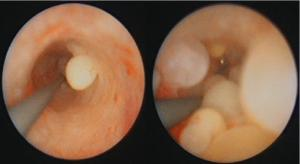

You are here: Urology Textbook > Ureters > Ureteritis cystica
Ureteritis Cystica
Definition of Ureteritis Cystica
Ureteritis cystica is a rare urothelial inflammatory response, which causes vesicles of the ureteral mucosa [fig. ureteritis cystica].
|  |
Fig. ureteritis cystica: benign inflammatory reaction of the urothelium to infection or mechanical irritation. |
Etiology and Pathology
Ureteritis cystica is an inflammatory reaction of the urothelium to infection or mechanical irritation (e.g. nephrolithiasis). The reaction forms subepithelial vesicles of 1 mm to 2 cm in size. The vesicles have an epithelial lining and an inflammatory infiltrate around the cysts, which are filled with protein-rich liquid.
Signs and Symptoms of Ureteritis Cystica
Ureteritis cystica may be without any complains. Possible symptoms are hematuria, urinary obstruction with flank pain, symptoms of a urinary tract infection or symptoms due to nephrolithiasis.
Diagnostic Work-up
- Ultrasound: Hydronephrosis?
- Intravenous or retrograde pyelogram: multiple, round, well-defined, small filling defects of the ureteral wall.
- Ureteroscopy with biopsies: only necessary, when in doubt to confirm the diagnosis.
Treatment of Ureteritis Cystica
The treatment depends on the symptoms: watchful waiting, antibiotic treatment or destruction of the vesicles by ureteroscopy in case of urinary obstruction.
| Retroperitoneal fibrosis | Index | Ureteral diseases |
Index: 1–9 A B C D E F G H I J K L M N O P Q R S T U V W X Y Z
References
 Deutsche Version: Ureteritis cystica
Deutsche Version: Ureteritis cystica